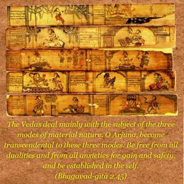

The Vedas deal mainly with the subject of the three modes of material nature. O Arjuna, become transcendental to these three modes. Be free from all dualities and from all anxieties for gain and safety, and be established in the self.


All material activities involve actions and reactions in the three modes of material nature. They are meant for fruitive results, which cause bondage in the material world. The Vedas deal mostly with fruitive activities to gradually elevate the general public from the field of sense gratification to a position on the transcendental plane. Arjuna, as a student and friend of Lord Kṛṣṇa, is advised to raise himself to the transcendental position of Vedānta philosophy where, in the beginning, there is brahma-jijñāsā, or questions on the supreme transcendence. All the living entities who are in the material world are struggling very hard for existence. For them the Lord, after creation of the material world, gave the Vedic wisdom advising how to live and get rid of the material entanglement. When the activities for sense gratification, namely the karma-kāṇḍa chapter, are finished, then the chance for spiritual realization is offered in the form of the Upaniṣads, which are part of different Vedas, as the Bhagavad-gītā is a part of the fifth Veda, namely the Mahābhārata. The Upaniṣads mark the beginning of transcendental life.
As long as the material body exists, there are actions and reactions in the material modes. One has to learn tolerance in the face of dualities such as happiness and distress, or cold and warmth, and by tolerating such dualities become free from anxieties regarding gain and loss. This transcendental position is achieved in full Kṛṣṇa consciousness when one is fully dependent on the good will of Kṛṣṇa.